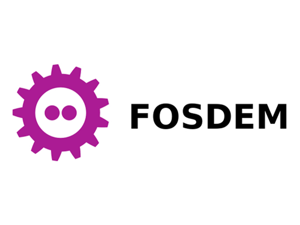
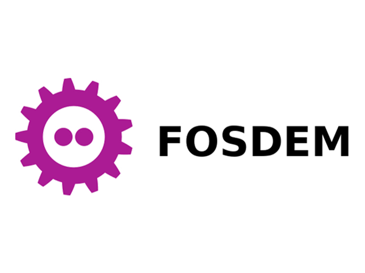

8h30 | CONFÉRENCE

8h30 | CONFÉRENCE

Samedi en visioconférence,
Dimanche avec Hubert Van de Walle et Olivier Daniel Nyionkuru.
Après avoir été aux conférences de 2019 en en avoir retenu une expérience positive et la découverte de nombreuses choses dans le monde Open Source, je me suis intéressé au programme de 2020.
Etant donné mon programme du weekend, je n'ai pu malheureusement y aller le samedi malgré un intérêt certain pour les conférences et présentations liées à Python utilisé avec Rust ainsi qu'un comparatif entre MySQL et MariaDB (et l'intérêt d'utiliser l'un ou l'autre) fort pratique pour mon sujet de TFE.
Des conférences liées à HTTP et HTTP/3 ainsi que sur le Linux Kernel m'intéressaient également lors du samedi.
Pour remédier à cela, j'ai suivi les conférences par retransmission live et différée.
Les conférences et speech sont disponible en rediffusion en ligne.
Vous trouverez, listées à la suite, les conférences auxquelles j'étais présent lors du FOSDEM 2020 ainsi que d'autres conférences que j'ai suivi par la suite car je n'était pas disponible le samedi.
Légende :
** : retransmission live.
*** : retransmission live différée (vidéo rendue disponible par la suite dans les archives de FOSDEM 2020).